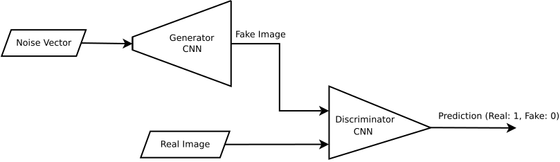
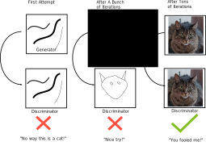
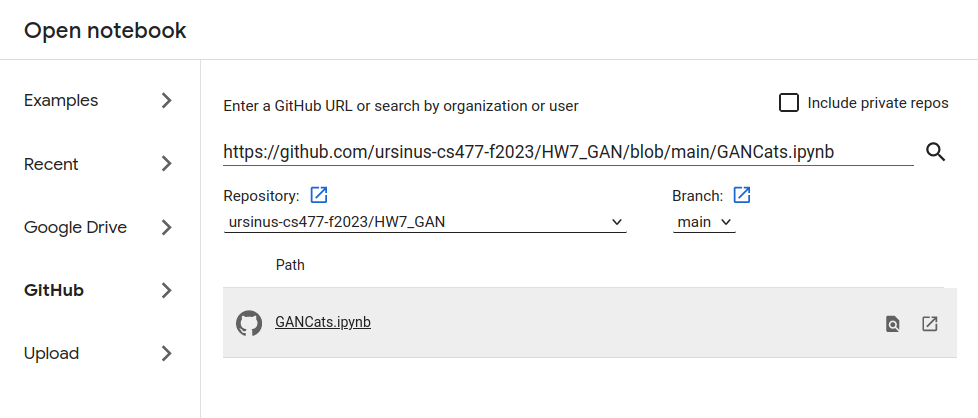
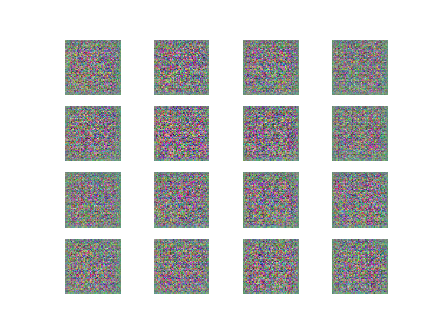
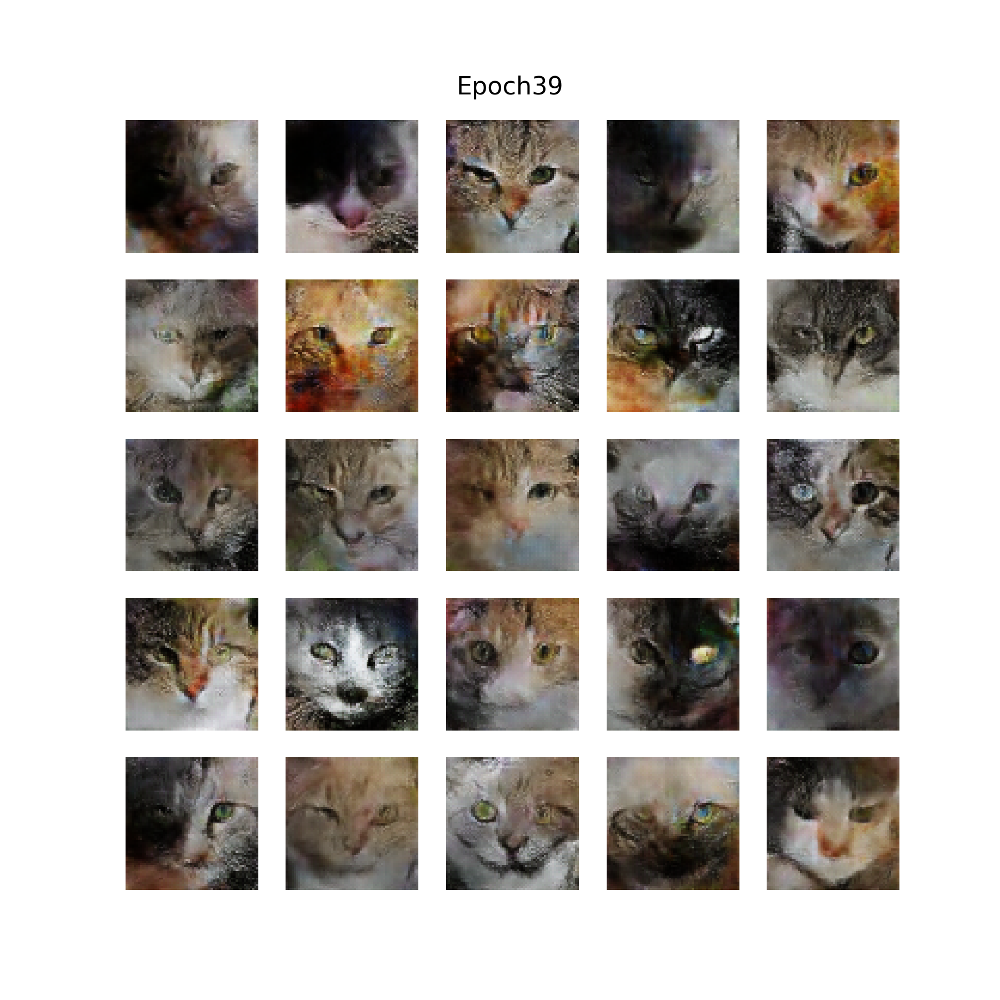

Homework 7 Part 1: This Cat Doesn't Exist
Chris Tralie
Table of Contents
Overview
From tools such as ChatGPT in natural language processing to StableDiffusion and Dall-E in the image space, we are currently witnessing an explosion of generative techniques. In fact, generative techniques are so ubiquitous across so many domains that an entire web site is devoted to cataloging different applications of "this X doesn't exist," where X includes {"person", "rental", "city", "food blog", "campsite", "3D chair", ...}
Now that students understand enough background on machine learning broadly and deep neural networks in particular, they will be able to replicate the inner workings of generative systems for images at a moderate scale using industrial grade software. In this assignment in particular, we will explore "this cat doesn't exist." Students will train an unsupervised learning system in pytorch that is able to generate cats by learning from a database of about 16,000 64x64 color images of cats. The tool of choice in this assignment is generative adversarial networks.
Learning Objectives
- Implement and train generative adversarial networks to capture image distributions in an unsupervised way
- Gain experience with industrial grade deep learning software (pytorch)
- Reflect on the ethics of generative technology
Background
We're going to look at a very interesting unsupervised technique known as a Deep Convolutional Generative Adversarial Network (DCGAN) that will learn how to generate fake images that fit the distribution of a set of training images. Somehow, by the end of this exercise, we're going to feed a random vector to a network, and it's going to spit out an image that looks like a cat. In this way, it is similar to what we did with varitional autoencoders, although the results will be much less blurry.
The GAN, devised by Goodfellow et al back in 2014, accomplishes this feat by putting two networks into competition with each other. The first network, known as the generator, takes as input a "noise vector" (a vector of random numbers) and outputs a counterfeit image. The second network, known as the discriminator, compares these fake images to real images in the training set and classifies them as real (1) or fake (0). The schematic below shows this visually
As the training goes along, we try to minimize the sum of two losses, one for each network:
- The generator loss penalizes fake images outputted by the generator that are classified as fake. So the generator is incentivized to improve the quality of its counterfeit images over time.
- The discriminator loss penalizes fake images that are classified as real and real images that are classified as fake. In this way, it learns to get better and better at telling counterfeits from fakes.
The learning proceeds by taking steps to minimize the loss over steps 1 and 2 over and over again in a loop. What's interesting is that as the generator improves, the loss of the discriminator goes up, and it must improve, and vice versa. So they keep going back and forth in competition and improving each other. Eventually, the generator will start creating new images out of thin air that look like they might belong to the distribution of the training set. The cartoon picture below shows something like what me might expect:
Programming Tasks
Click here to download the starter code for this assignment. You will be editing the notebook file GanCats.ipynb. When you are finished, you should submit this file to canvas.
Google Colab
If you are having trouble getting torch to run on your own machine, you will have to use Google colab as a cloud-based web service. There is a free version that comes pre-loaded with torch, which should be suitable for this assignment. Open a notebook and select the GitHub option, then paste in the URL copy in the URL https://github.com/ursinus-cs477-f2023/HW7_GAN/blob/main/GANCats.ipynb, as shown below:
GAN Part 1: Discriminator (7 Points)
Your first task is to implement the discriminator model for the GAN
Your Task
Fill in the skeleton class Discriminator to implement a convolutional neural network that takes in a batch of images and outputs a single number for each image, which will be used to classify that image as real or fake. You should have depth groups of the following 3 layers in sequence:
nn.Conv2dwithkernel_size=4, stride=2, padding=1, bias=False-
nn.BatchNorm2d, passing the number of channels coming out of the Conv2d. -
nn.LeakyReLU
As in the convolutional autoencoder example, you should halve the resolution and double the number of channels in each group.
Finally, you should have a layer that flattens what comes out of the above layers, and you should pass that through one final linear layer that goes down to 1 dimension, which is the final output of the network. Note that we should not add any ReLUs after this last layer, as we will handle that in the loss function during training like we did during the last assignment
Tips
Have a look back at the module notes on convolutional autoencoders. The architecture you setup here should be quite similar to the encoder in that example. The main difference is you're mapping down to only one dimension.
Also, before you proceed to the next task, I highly recommend setting up a dummy batch to send through and to check the shape at every layer. For instance:
GAN Part 2: Generator (7 Points)
Your second task is to implement the generator model for the GAN.
Your Task
Fill in the skeleton class Generator to implement a convolutional neural network that takes in a flat vector of random numbers and which gradually upsamples them through convolutional layers to generate an output image at the same resolution as the real images in the dataset.
In particular, let
-
imgres = dim_img//(2**depth) -
in_channels = end_channels*(2**(depth-1)) -
shape_latent = (in_channels, imgres, imgres)
Unflatten layer to a shape shape_latent, followed by leaky Relu. Then, intersperse a series of the following layers for depth number of repetitions:
-
ConvTranspose2Dwithkernel_size=4, stride=2, padding=1, bias=False -
nn.BatchNorm2d, passing the number of channels coming out of the ConvTranpose2d. -
nn.LeakyReLUat every group except for the last group, which should have ann.Sigmoid(logistic function) to keep the outputs between 0 and 1.
in_channels into the first group and halve the number of channels at each group, until you output exactly 3 channels at the end (for our synthetic RGB color)
Tips
Have a look back at the module notes on convolutional autoencoders. Your architecture should be a lot like the decoder in that example.
Also, before you proceed to the next task, I highly recommend setting up a dummy batch of noise to send through and to check the shape at every layer. For instance:
Should output an image like this:
Our goal will be to train the network so these eventually look like cats instead of noise.
GAN Part 3: Training Loop And Loss (8 Points)
We are finally ready to put the training loop together to train the GAN!
Your Task
Fill in the training loop at the bottom of the notebook. You should instantiate both a discriminator and generator notebook, and create an individual Adam optimizer for each one with a learning rate of 3e-4. Be sure to pass only the discriminator's parameters to the discriminator optimizer and only the generator's parameters to the generator optimizer
Then, in the main training loop, cycle through batches of size 16 for 40 epochs. For each batch, do the following in sequence:
-
-
Zero out the generator's gradients, then send
batch_sizerandom noise examples through the generator, then through the discriminator -
Use a
BCEWithLogitsLossloss function to compare your outputs from the discriminator to a vector of all 1's, since we're trying to trick the discriminator in this step - Finally, compute the gradients of the loss function and take a step in the generator's optimizer.
-
Zero out the generator's gradients, then send
-
-
Zero out the discriminator's gradients, then send
batch_sizerandom noise examples through the generator, then through the discriminator -
This time, use a
BCEWithLogitsLossloss function to compare your outputs from the discriminator to a vector of all 0's, since we're now trying to correct the discriminator - Send the batch of cats through the discriminator and add to the loss function a comparison with a vector of all 1's, since we want to get the cats correct
- Compute the gradients of the sum of these two loss terms, then take a step in the discriminator's optimizer.
-
Zero out the discriminator's gradients, then send
Tips
You should output some generated examples at the end of each epoch by using the plot_samples method.
Start off with a simpler network with
- depth = 2
- dim_latent = 32
- start_channels = end_channels = 32
The final result after 40 epochs should look something like this:
The video below shows random generations at the end of each training epoch to show the progress of the training
Ethics (3 Points)
This kind of generative technology is obviously ripe for abuse. Give 3 examples of how this technology could be misused.